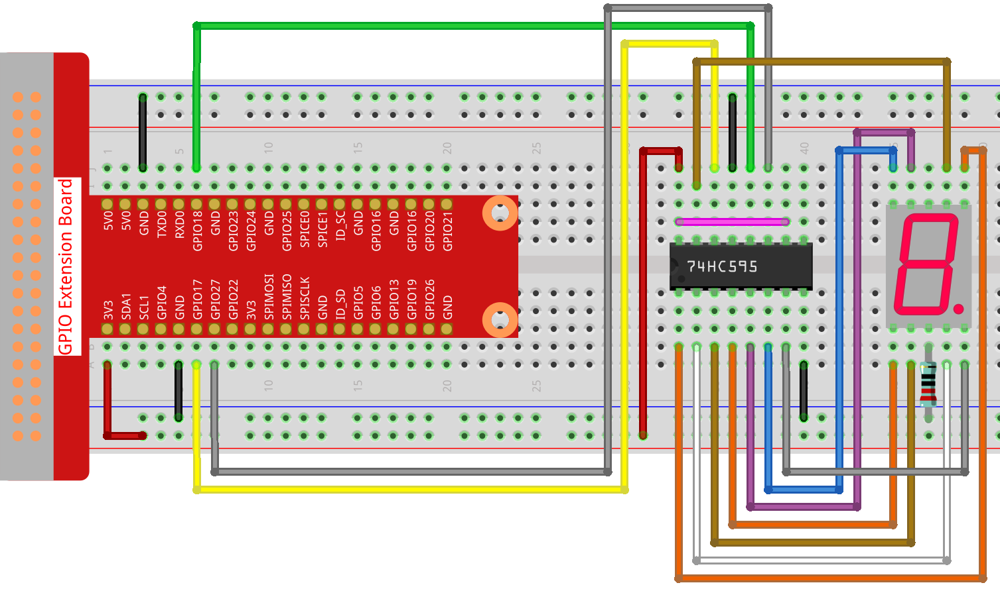

Nota
¡Hola! Bienvenido a la Comunidad de Entusiastas de SunFounder para Raspberry Pi, Arduino y ESP32 en Facebook. Sumérgete en el mundo de Raspberry Pi, Arduino y ESP32 junto a otros entusiastas.
¿Por qué unirse?
Soporte Experto: Resuelve problemas postventa y desafíos técnicos con la ayuda de nuestra comunidad y equipo.
Aprende y Comparte: Intercambia consejos y tutoriales para mejorar tus habilidades.
Avances Exclusivos: Accede anticipadamente a anuncios de nuevos productos y adelantos exclusivos.
Descuentos Especiales: Aprovecha descuentos exclusivos en nuestros productos más recientes.
Promociones Festivas y Sorteos: Participa en sorteos y promociones especiales.
👉 ¿Listo para explorar y crear con nosotros? Haz clic en [Aquí] y únete hoy mismo.
Show Number
En esta lección, utilizaremos Processing para controlar un display de 7 segmentos y mostrar una figura del 0 al 9 y de A a F.
Conexión
Esquema
import processing.io.*;
int SDI=17; // entrada de datos en serie
int RCLK=18; // entrada de reloj de memoria (STCP)
int SRCLK =27; // entrada de reloj de registro de desplazamiento (SHCP)
int[] SegCode= {0x3f,0x06,0x5b,0x4f,0x66,0x6d,0x7d,0x07,0x7f,0x6f,0x77,0x7c,0x39,0x5e,0x79,0x71};
void hc595_shift(int dat){
int i;
for(i=0;i<8;i++){
int n=(0x80 & (dat << i));
if ( n==0){
GPIO.digitalWrite(SDI, 0);
} else {
GPIO.digitalWrite(SDI, 1);
}
GPIO.digitalWrite(SRCLK, 1);
delay(1);
GPIO.digitalWrite(SRCLK, 0);
}
GPIO.digitalWrite(RCLK, 1);
delay(1);
GPIO.digitalWrite(RCLK, 0);
}
void setup() {
size(400, 200);
frameRate(10);
GPIO.pinMode(SDI, GPIO.OUTPUT);
GPIO.pinMode(RCLK, GPIO.OUTPUT);
GPIO.pinMode(SRCLK, GPIO.OUTPUT);
GPIO.digitalWrite(SDI, 0);
GPIO.digitalWrite(RCLK, 0);
GPIO.digitalWrite(SRCLK, 0);
fill(0,25,88);
textAlign(CENTER,CENTER);
textSize(height*0.8);
}
void draw() {
background(255);
int number = (frameCount%100)/10;
text(number, width/2, height/2);
hc595_shift(SegCode[number]);
}
¿Cómo funciona?
Importa processing.io.* y usa la biblioteca de funciones GPIO para controlar los pines del tubo digital.
Define el array SegCode = {0x3f,0x06,0x5b,0x4f,0x66,0x6d,0x7d,0x07,0x7f,0x6f,0x77,0x7c,0x39,0x5e,0x79,0x71}
que representa un array de código de segmentos del 0 al F en hexadecimal (cátodo común).
La función setup() establece los tres pines SDI, RCLK y SRCLK como salida, y el dato inicial en 0.
La función hc595_shift(int dat) se usa para desplazar el SegCode al 74HC595.
void hc595_shift(int dat){
int i;
for(i=0;i<8;i++){
int n=(0x80 & (dat << i));
if ( n==0){
GPIO.digitalWrite(SDI, 0);
} else {
GPIO.digitalWrite(SDI, 1);
}
GPIO.digitalWrite(SRCLK, 1);
delay(1);
GPIO.digitalWrite(SRCLK, 0);
}
GPIO.digitalWrite(RCLK, 1);
delay(1);
GPIO.digitalWrite(RCLK, 0);
}
n=(0x80 & (dat << i)) significa desplazar dat a la izquierda por i bits y luego realizar la operación & con 0x80.
La regla de la operación & es que cuando ambos lados de & son 1, el resultado es 1, de lo contrario, el resultado es 0.
Por ejemplo, asumimos dat=0x3f, i=2 (0011 1111 << 2, se desplaza a 1111 1100), luego 1111 1100 & 1000 0000 (0x80)) = 1000 0000.
Finalmente, asigna el dato a SDI (DS) por bits.
digitalWrite(SRCLK, 1) cuando SRCLK genera un pulso ascendente de 0 a 1, los datos se transfieren del registro DS al registro de desplazamiento;
digitalWrite(RCLK, 1) cuando RCLK genera un pulso ascendente de 0 a 1, los datos se transfieren del registro de desplazamiento al registro de almacenamiento.
fill(0,25,88);
textAlign(CENTER,CENTER);
textSize(height*0.8);
fill(): Establece el color utilizado para rellenar las formas.textAlign(CENTER,CENTER): Establece la alineación actual para dibujar texto. Los parámetrosLEFT,CENTERyRIGHTdeterminan la alineación en relación con los valores x e y en la funcióntext().textSize(): Define el tamaño de la fuente actual, medido en píxeles.
Estas funciones personalizan el estilo del texto mostrado en Processing.
void draw() {
background(255);
int number = (frameCount%100)/10;
text(number, width/2, height/2);
hc595_shift(SegCode[number]);
}
frameCount es una semilla, relacionada con frameRate.
Por defecto, frameRate es 60, lo que significa que frameCount acumula 60 veces por segundo.
De este modo, Processing y el display de 7 segmentos pueden mostrar simultáneamente cifras del 0 al 9 y de la A a la F.
Para más información, consulta Processing Reference.